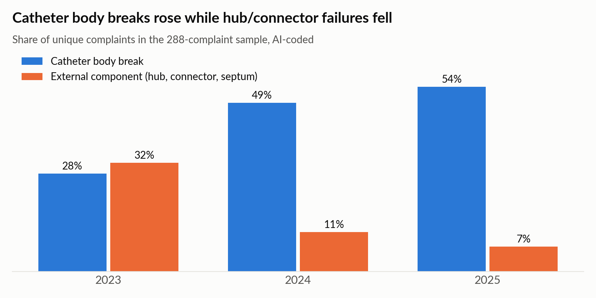
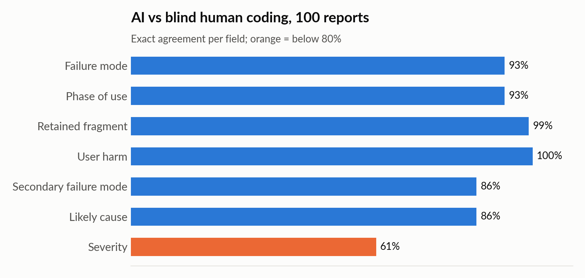

Projects / P-09
Data, code & AI
AI analysis of catheter adverse event reports
Using a large language model to read 300 FDA adverse event reports for long-term central venous catheters, and testing how far its answers can be trusted.
P-092026
- Project
- Reading 300 FDA reports with a language model, then checking it against a person
- Context
- Self-directed
300FDA MAUDE reports
93%agreement with manual review
0.90Cohen's kappa
80%of 'leaks' were body breaks
The question
Can AI read free-text complaint reports reliably enough to show what is really going wrong with a device?
What I did
- Pulled 300 reports from 2023 to 2025 from the FDA MAUDE database through the openFDA API.
- Wrote the intended use and coding rules first, then had the model classify each report by failure mode, severity and phase of use.
- Validated the model against a blinded manual review of 100 reports, using a predefined coding guide.
- Compared what the field data showed with a design-stage FMEA.
What I found
80% of reports coded as leaks were really catheter body breaks, and breaks rose from 28% to 54% of complaints over the period. The model agreed with the manual review on 93% of failure modes (Cohen's kappa 0.90), and severity agreement rose to 85% after one coding rule was clarified. The comparison suggested six updates to the FMEA.
Figures

